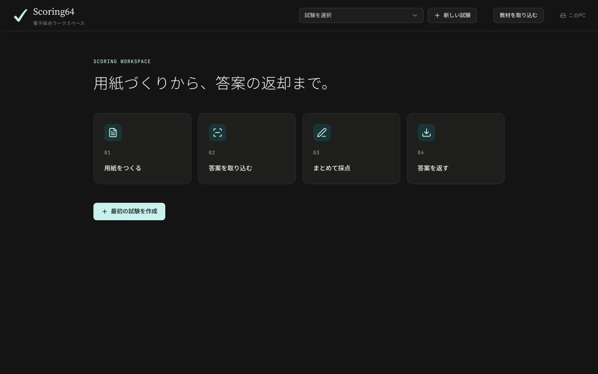
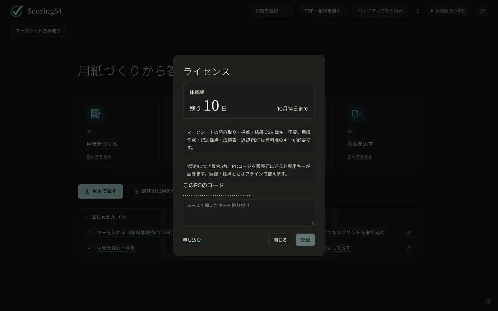

Getting started
はじめかた
ダウンロードから、見本で試すまでの手順です。
01 · Install
ダウンロードとインストール
- 下のボタンから、インストーラー（Scoring64-Setup.exe）をダウンロードします。
ダウンロード Windows 10／11（64ビット） - ダウンロードしたファイルを開き、画面に従って進めます。管理者の権限は要りません。
Windows の警告が出たとき
新しいアプリのため、警告が出ることがあります。次の順に押して進めてください。
Edge に「一般的にダウンロードされていません」と出たら
- …
- 保持
- 詳細表示
- 保持する
開くときに「Windows によって PC が保護されました」と出たら
- 詳細情報
- 実行
02 · First launch
初めて開く
- インストールが終わると、Scoring64 が開きます。次からは、スタートメニューかデスクトップの「Scoring64」から開きます。
- ブラウザ（Edge か Chrome）が開き、Scoring64 の画面が出ます。初めての起動は30秒ほどかかることがあります。
画面はブラウザに出ますが、インターネットにはつながず、このパソコンの中だけで動きます。


03 · Licence key
30日間の無料期間とキー
入れた日から30日間は、キーなしですべての機能を使えます。右上に「体験版 残り30日」のように出ます。
続けて使うときは、料金と申し込みから申し込みます。キー（S64-1. で始まる長い文字列）がメールで届いたら、次のように入れます。
- 画面の右上の「体験版 残り◯日」を押します。
- メールのキーを、そのまま全部コピーして貼り付けます。途中で改行されていてもかまいません。
- 「登録」を押します。作った試験や採点は、そのまま続きから使えます。


30日が過ぎても、見本で試す・取り込み・採点はできます。止まるのは、成績表と返却データの出力だけです。データは消えません。
04 · Try the sample
見本で試す
アプリに入っている見本の試験で、ひととおり試せます。紙・スキャナー・キーは要りません。5分ほどです。
- 「見本で試す」を押します。
- 見本の答案を取り込みます。
- 記号問題が自動で採点されます。「要確認」に回った答案を確かめます。
- 記述問題を、1人ずつ採点します。
- 返却データを作ります。
いつものプリントで使うときは、使い方を見てください。
05 · Your data
データの保存先
試験・答案の画像・成績は、このパソコンの次のフォルダに保存します。外部のサーバーには送りません。
%LOCALAPPDATA%\Scoring64\data
スタートメニューの「Scoring64 のデータフォルダ」から開けます。
06 · Uninstall
アンインストール
スタートメニューの「Scoring64 をアンインストール」を開きます。Windows の「設定」→「アプリ」からも消せます。
アンインストールしても、データのフォルダは消えません。入れ直すと、そのまま続きから使えます。
07 · Move to another PC
別のパソコンへ移す
- 今のパソコンで、「出力・バックアップ」のタブの「全試験をバックアップ」を押します。すべての試験が1つのファイル（
.scoring64）になります。 - そのファイルを、USBメモリなどで新しいパソコンに移します。
- 新しいパソコンに Scoring64 を入れ、同じキーを登録します。
- 「バックアップから復元」でファイルを選びます。
パソコンを買い替えるときも同じです。1つの教室の中なら、何台のパソコンで使ってもかまいません。